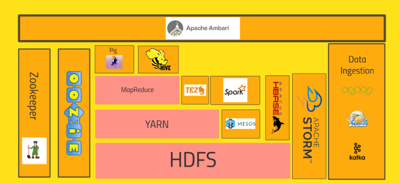
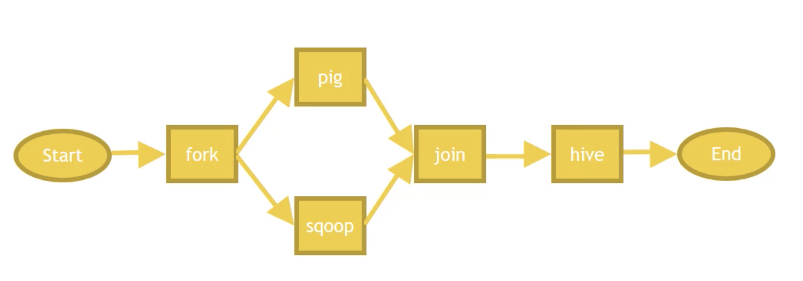
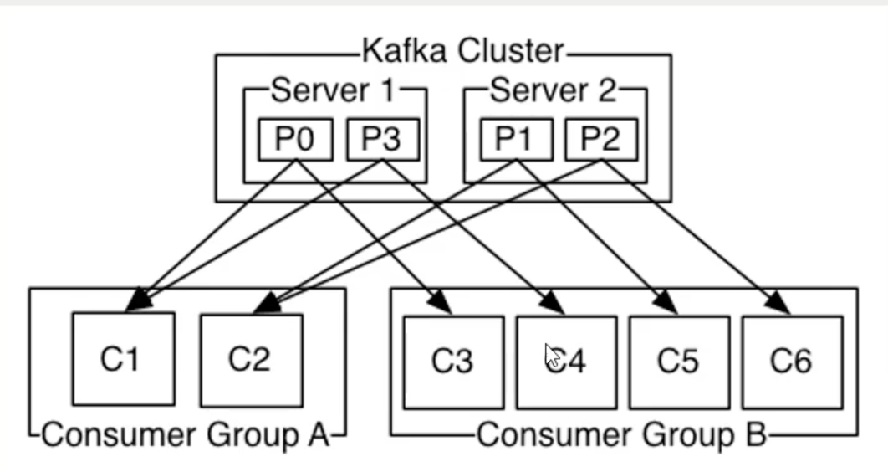
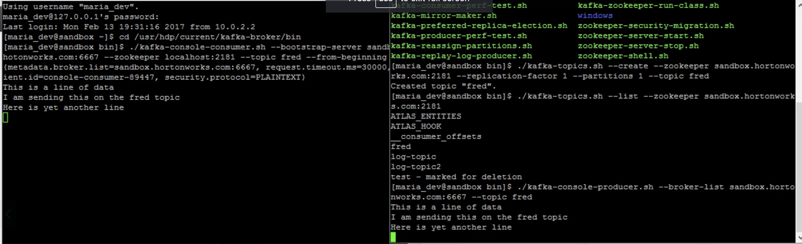
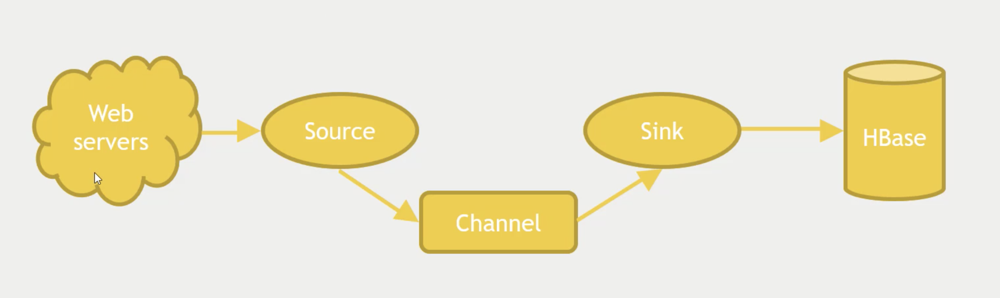

Ultimate Hands-on with Hadoop
Table of Contents

Figure 1: Hadoop Eco System
- HDFS
- Distributed file system, manages data that stores it in blocks distributed across the system
- YARN
- Manages computation of your cluster (Yet another resource negotiator), what gets run where
- MapReduce
- Transform and aggregate data
- Hive
- SQL Like queries on your cluster
- Pig
- Scripting interface using pig-latin
- Tez
- DAG alternative to MapReduce. Hive and Pig has alternative interfaces for Tez
- Spark
- DAGs and in-memory processing. Ecosystem - streaming, graphs etc
- Apache HBase
- NoSQL BigTable - favours consistency
- MySQL, MongoDB, Cassandra
- Other databases
- Sqoop
- Import and export data from mysql into hadoop
- Zookeeper
- Keep track of who is the current master
- Oozie
- workflows and schedule jobs across cluster
- Querie Engines
- Apache Drill, Phoenix, Presto - allows SQL query writing across multiple databases
- Hue
- Cloudera's answer to Ambari , web ui
- Apache Zeppelin
- Notebook style writing
- Streaming
- Storm, spark streaming, flink
- Flume, Kafka
- Streams data into your cluster at high transaction rates
- Ambari
- In hortonworks gives web interface to manage everything
HDFS
Optimised for large files, not really many small files
Stores data in blocks, and these blocks are stored across multiple servers. Data is stored in more than one block for fail-over
Single Name Node - keeps track of where all blocks live. Knows the file name and path. Contains an edit block so it knows what has been created and edited. Data Nodes - contains data
Reading a file
Client node talks to Name node to see which blocks to go look at, then client node goes to the actual data nodes.
Writing a file
Client node tells name node the file node. Client talks to single data node to write file, and data nodes will talk to each other to store the data in replicated manner Data nodes send back a acknowledged and client node tells name node where it was stored and that it has been written
Name node DR
Always only have 1 active Name node, several options to avoid losing data:
- backup. In case of name node failure, bring up new name node with backups
- Secondary namenode. Maintains merged copy of edit log you can restore from.
- HDFS Federation. Each namenode manages a specific namespace volume. Separate name nodes for separate volumes (Namenode can reach name list limit)
- HDFS High Available. If you can't afford downtime. Uses a shared edit log. Zookeeper tracks active namenode and extreme measures to ensure only one namenode is used at a time
Using HDFS
- UI (Ambari) - looks like a giant file system
- CLI
- HTTP directly or via HDFS Proxies
- Java interface
- NFS Gateway (network file system), way of remoting a remote file system on the server. Will just look like another mount point on your linux box.
MapReduce
2 stages: Map and Reduce.
Map phase includes shuffling and sorting.
Example using python. Can run locally with python script.py u.data or on hadoop cluster with python scipt.py -r hadoop –hadoop-streaming-jar /usr/hdp/current/hadoop-mapreduce-client/hadoop-streaming.jar u.data
from mrjob.job import MRJob from mrjob.step import MRStep class RatingsBreakdown(MRJob): def steps(self): # Takes in 2 parameters - a mapper and a reducer # in this case the mapper is the output of a mapper and reducer return [ MRStep(mapper=self.mapper_get_ratings, reducer=self.reducer_count_ratings), MRStep(reducer=self,reducer_sorted_output) ] def mapper_get_ratings(self, _, line): (userID, movieID, rating, timestamp) = line.split('\t') yield movieID, 1 def reducer_count_ratings(self, key, values): yield str(sum(values)).zfill(5), key #zfill filss the number up to 5 spaces e.g. 00004 def reducer_sorted_output(self, count, movies): for movie in movies: yield movie, count if __name__ == '__main__': RatingsBreakdown.run()
Pig
Built on top of MapReduce or Tez, a SQL-like interface (Pig Latin) to write MapReduce pipelines without having to use the complex MapReduce
Can run this using grunt, script or ambarai / hue
Example on MapReduce: load movie data, transform to show average ratings, filter to show only ratings > 4, join datasets to get names of movies and not ID's. To execute on Tez (faster): check the "execute on Tez" checkbox and execute. (Tez uses acyclic graphs for computation)
Each of the expressions is called a 'relation'
ratings = LOAD '/user/maria_dev/ml-100k/u.data' AS (userId:int, movieId:int, rating:int, ratingTime:int);
metadata = LOAD '/user/maria_dev/ml-100k/u.item' USING PigStorage('|')
AS (movieID:int, movieTitle:chararray, releaseDate:chararray, videoRelease:chararray, imdbLink:chararray);
nameLookup = FOREACH metadata GENERATE movieID, movieTitle,
ToUnixTime(ToDate(releaseDate, 'dd-MMM-yyyy')) AS releaseTime;
ratingsByMovie = GROUP ratings BY movieId;
avgRatings = FOREACH ratingsByMovie GENERATE group AS movieID, AVG(ratings.rating) AS avgRating;
fiveStarMovies = FILTER avgRatings BY avgRating > 4.0;
fiveStarsWithData = JOIN fiveStarMovies BY movieID, nameLookup BY movieID;
oldestFiveStarMovies = ORDER fiveStarsWithData BY nameLookup::releaseTime;
DUMP oldestFiveStarMovies;
Basic commands
- LOAD STORE DUMP
- STORE ratings INTO 'outRatings' USING PigStorage(':');
- FILTER DISTINCT FOREACH/GENERATE MAPREDUCE STREAM STREAM SAMPLE
- JOIN COGROUP GROUP CUBE
- ORDER RANK LIMIT
- UNION SPLIT
Diagnostics
- DESCRIBE
- EXPLAIN
- ILLUSTRATE
UDF's
- REGISTER
- DEFINE
- IMPORT
Some other functions and loaders
- AVG CONCAT COUNT MAX MIN SIZE SUM
- PigStorage
- TextLoader
- JsonLoader
- AvroStorage
- ParquetLoader
- OrcStorage
- HBaseStorage
Spark
DAG Engine (directed acyclic graph) optimizes workflows
Components of spark part of spark core
- Spark streaming
- Spark SQL
- MLLib
- GraphX
ssh into hadoop cluster, run: spark-submit file.py
Can start a thrift service with spark sql and connect to it and query it
More details in spark course
Hive
On top of Mapreduce and Tez.
Short for HiveQL - allows you to query HDFS data using SQL syntax
Basically smokes and mirrors to make it seem like you're working with a relational database
Why not hive?
- high latency - not appropriate for OLTP
- stores data de-normalized
- SQL is limited in what it can do (Pig, spark allows more complex stuff)
- No transactions
- no record-level updates, inserts, deletes
In hive view, can upload table and then write queries in HQL.
Can create views as well (which gets persisted as with usual relational db)
How does hive work?
Schema on read
Hive takes unstructured data and applies a schema to it as it reads, where relational databases write the schema first and read data according to that schema (schema on write)
LOAD DATA - hive will move data from a distributed filesystem into Hive (the raw data) LOAD DATA LOCAL - copies data from local filesystem into Hive Managed vs External tables: managed tables are where hive takes control of that data. To create external table use "CREATE EXTERNAL TABLE", give it a location and then hive doesn't take ownership of it. Thus, dropping data will drop metadata but not the actual data.
Partitioning
You can store your data in partitioned subdirectories (optimisation)
E.g.
CREATE TABLE person( name STRING, address STRUCT<street: String, city: String> ) PARTITIONED BY (country STRING)
Can use it through Ambari / Hue; JDBC/ODBC server; Thrift service (but remember hive is not suitable for OLTP); via Oozie
Sqoop
Meant for large datasets.
Kicks of mapreduce jobs to handle importing and exporting your data
Takes data from mysql/postgres etc, distributes processing across several parallel mappers and writing to HDFS.
Command line tool:
sqoop import --connect jdbc:mysql://localhost/movielens --driver com.mysql.jdbc.Driver --table movies
To add to hive instead add '–hive-import' To set the number of mappers add -m 1
Can do incremental imports in sqoop (can be used to keep table up to date) by using –check-column (to check like a date column) and –last-value
To export from hive table to mysql: (mysql table needs to exist)
sqoop export --connect jdbc:mysql://localhost/movielens -m 1 --driver com.mysql.jdbc.Driver --table exported_movies --export-dir /apps/hive/warehouse/movies --input-fields-terminated-by '\0001'
Integrating hadoop with nosql
CAP: Consistency, Availability, Partition-Tolerance
Mysql = C/A cassandra = A/P Hbase and mongodb = C/P
HBase
HBase is built on top of hdfs, based on google's BigTable
Does not have a query language but has a CRUD API's
Auto-sharding on top of HDFS onto "region servers"
HMaster (master nodes that keeps track of where which data is) Zookeeper is the "who is watching the watchers", keeps track of where the Master server is and its status.
HBase is transactional on rows
HBase data model
keys stored lexographically in hbase
ROW referenced by a unique KEY Each ROW has some small number of COLUMN FAMILIES which may contain arbitrary COLUMNS.
E.g. if you have ratings you'll have a column family for ratings, and the family has columns that may or may not be filled in
CELL: intersection of a row and a column, and each cell can have many versions with given timestamps
Example:
key: com.cnn.www Contents Column family: contents (one column with multiple versions - history of the webpage) Anchor Column family: Anchor: cnnsi.com = "CNN"; Anchor:my.look.ca = "CNN.com" >> syntax: key = columnFamily:Name value = whatever value
Access HBase
- HBase shell
- Java API (wrappers for python, scala etc)
- Spark, Hive, Pig
- REST service
- Thrift service
- Avro service
Examples
HBASE table:
UserID; Rating:50; Rating:33; Rating:233 # rating for movie 50 was e.g. 1 star (so value = 1)
Start HBASE through admin
Kick off rest server running on top of HBASE
log into cluster via ssh
start and stop
/usr/hdp/current/hbase-master/bin/hbase-daemon.sh start rest -p 8000 --infoport 8001 /usr/hdp/current/hbase-master/bin/hbase-daemon.sh stop rest
Do stuff to rest using python
Use library called starbase
from starbase import Connection c = Connection("sandbox-hdp.hortonworks.com", "8000") ratings = c.table('ratings') if(ratings.exists()): print("Dropping existing ratings table\n") ratings.drop() ratings.create('rating') print("Parsing data\n") ratingFile = open('/opt/jemstep/code/udemy/ml-100k/u.data', 'r') batch = ratings.batch() for line in ratingFile: (userID, movieID, rating, timestamp) = line.split() batch.update(userID, {'rating': {movieID: rating}}) ratingFile.close() print("Committing ratings data to HBase via REST service\n") batch.commit(finalize=True) print("Fetch data. Ratings for user ID 1\n") print(ratings.fetch("1")) print("Ratings for user ID 33\n") print(ratings.fetch("33"))
Integrating Pig with HBase
- Must create HBase table ahead of time
- Your relation must have a unique key as its first column, followed by subsequent columns as you want htem saved in HBase
- USING clause allows you to STORE into an HBase table
- Can work at scale because HBase is transactional on rows
To create a new table in hbase:
hbase shell list #shows tables create 'users', 'userinfo' # create table user with one column family 'userinfo' scan 'users' #peeks into table - timestamp built-in in result because hbase is versioned disable 'users' #need to do this before being able to drop drop 'users'
Create a pig file and run using 'pig file.pig'
ratings = LOAD '/xxx/u.user' USING PigStorage('|') AS (userID:int, age:int, gender:chararray, occupation:chararray, zip:int); STORE ratings INTO 'hbase://users' USING org.apache.pig.backend.hadoop.hbase.HBaseStorage ( 'userinfo:age,userinfo:gender,userinfo:occupation,userinfo:zip');
Cassandra
How did it start?
comes from greek mythology - cassandra can tell the future
CAP theorem: consistency, availability and partition-tolerance, they say you can only have 2 out of 3.
Cassandra favors availability over consistency (eventually consistent), but you can tune it so "tunable consistency"
What is it?
Distributed nosql with no single point of failure
No master node, every node runs exactly the same software and performs the same functions
Data model similar to hbase
non-relational but has limited CQL query language
Cassandra architecture
Ring architecture between all nodes for high availability
Nodes talk to each other and manage themselves
Can have multiple cassandra rings and replicate between. So you can use your replica ring for analytics without impacting transactional performance
CQL
no joins, all queries must be on some primary key
data has to be de-normalized
all tables must be in a keyspace (keyspaces are like databases)
Can also use CQLSH which is CQL in shell to create tables and stuff Replication should ideally be higher than below example, but for local with one node this is fine.
cqlsh --cqlversion="3.4.0" CREATE KEYSPACE movielens WITH replication = {'class'= 'SimpleStrategy', 'replication_factor':'1'} AND durable_writes = true; USE movielens CREATE TABLE users (user_id int, age int, PRIMARY KEY (user_id)) DESCRIBE TABLE users
Cassandra + Spark
DataStax has a spark-cassandra connector, which allows you to RW as dataframes
# to set spark version, set env var SPARK_MAJOR_VERSION from pyspark.sql import SparkSession from pyspark.sql import Row from pyspark.sql import functions def parseInput(line): fields = line.split('|') return Row(user_id = int(fields[0]), age = int(fields[1])) if __name-_ == "__main__": spark = SparkSession.builder.appName("Cass").config("spark.cassandra.connection.host","127.0.0.1").getOrCreate() lines = spark.sparkContext.textFile("hdfs:///user/maria_dev/ml-100k/u.user") users = lines.map(parseInput) usersDf = spark.createDataFrame(users) usersDf.write\ .format("org.apache.spark.sql.cassandra")\ .mode('append')\ .options(table="users", keyspace="movielens")\ .save() readUsers = spark.read\ .format("org.apache.spark.sql.cassandra")\ .options(table="users", keyspace="movielens")\ .load() readUsers.createOrReplaceTempView("users") sqlDF = spark.sql("SELECT * FROM users WHERE age < 20") sqlDF.show() spark.stop()
To run: (from hdp sandbox shell) spark-submit –packages datastax:spark-cassandra-connector:2.0.0-M2-s_2.11 CassandraSpark.py
MongoDB
Nothign new…
MongoDB and Spark
Can add mongo as a service to ambari - install via hdp sandbox shell, then add new service @ ambari and select it.
Python script:
from pyspark.sql import SparkSession from pyspark.sql import Row from pyspark.sql import functions def parseInput(line): fields = line.split('|') return Row(user_id = int(fields[0]), age = int(fields[1])) if __name-_ == "__main__": spark = SparkSession.builder.appName("mongo").getOrCreate() lines = spark.sparkContext.textFile("hdfs:///user/maria_dev/ml-100k/u.user") users = lines.map(parseInput) usersDf = spark.createDataFrame(users) usersDf.write\ .format("com.mongodb.spark.sql.DefaultSource")\ .mode('append')\ .option("uri","mongodb://127.0.0.1/movielens.users")\ .save() readUsers = spark.read\ .format("com.mongodb.spark.sql.DefaultSource")\ .option("uri","mongodb://127.0.0.1/movielens.users")\ .load() readUsers.createOrReplaceTempView("users") sqlDF = spark.sql("SELECT * FROM users WHERE age < 20") sqlDF.show() spark.stop()
run:
spark-submit –packages org.mongodb.spark:mongo-spark-connector 2.11:2.0.0 mongospark.py
So how do you choose?
Integration consideration, e.g. if you're using spark, you probably want to choose a db that can work with spark.
Scaling requirements, do you need distributed storing and processing?
Support considerations - do you have the expertise needed to support the tech?
Budget considerations
CAP considerations
Keep it simple, if you don't need to setup a complex nosql cluster, don't do it if you don't need to.
Querying data interactively
Query engines:
- Drill [ SQL engine that allows you to run sql queries on non-relational databases and data files ]
- Hue
- Phoenix [ SQL driver for HBase ]
- Presto [ Distributing queries across different data stores ] (meant for analysis, not for fast queries)
- Apache Zeppelen
Manage your cluster
Yarn
Yet Another Resources Negotiator
HDFS is the cluster storage layer YARN is the cluster compute layer on top of the storage layer MapReduce, Spark and Tez sits on top of YARN and are YARN applications
Tez
Makes Hive, Pig and MapReduce jobs faster Constructs DAGs Optimizes physical data flow and resource usage
MapReduce / Spark / Tez (YARN Applications) YARN (compute) HDFS (storage)
Mesos
Came out of Twitter - managers resources across your data center
More general, not just hadoop
Spark and Storm can run on mesos instead of yarn.
Can integrate yarn and mesos using myriad
Spark on mesos is limited to one executor per slave
Zookeeper
Coordinate your cluster
Keeps track of information that must be synchhronized across your cluster - which node is the master, which tasks are assigned to which workers, which workers are available
good idea to have zookeeper ensemble ("who's watching the watcher?")
Failure modes
zookeeper can help with some failures:
- master crashes - needs to fail over to a backup
- worker crashes - work needs to be distributed
- network trouble - part of your cluster can't see the rest of it (zookeeper notifies you)
Oozie
Orchestrates your hadoop jobs (scheduling and running tasks)
Oozie = Burmese word for "Elephant Keeper"
Workflows
Has a workflow concept which is a multi-stage hadoop job to chain together mapreduce, hive, pig, sqoop and distcp tasks. Can chain others like spark with add-ons. DAG specified by XML
Nodes:
- Start
- End
- Fork
- Join

Figure 2: Example Workflow
Example: Start -> fork -> pig ; sqoop -> join -> hive -> End
<?xml> <workflow-app > <start to="fork-node" /> <fork name="fork-node"> <path start="sqoop-node" /> <path start="pig-node" /> </fork> <action name="sqoop-node"> <sqoop xmlns=" .. "> <!-- Config here --> </sqoop> <ok to="joining" /> <error to="fail" /> </action> <join name="joining" to="hive-node" /> <!-- Hive same as scoop with ok to="end" --> <kill name="fail"> <message> Message here </message> </kill> <end name="end" /> </workflow-app>
How to setup a workflow in Oozie
- Make sure each action works on its own - debugging in Oozie is a nightmare
- Make a directory in HDFS for your job
- Create workflow.xml and put in HDFS folder
- Create job.properties to define any variables your workflow.xml needs
- This goes in your local filesystem where you'll launch the job from
- Can use these properties in your xml:
nameNode=hdfs://sandbox.hortonworks.com:8020 jobTask=hdfs://sandbox.hortonworks.com:8050 queueName=default oozie.use.system.libpath=true oozie.wf.application.path=${nameNode}/user/maria_dev
To run the workflow:
oozie job --ozie http://localhost:1100/oozie -config /home/maria_dev/job.properties -run
Monitor progress at http://127.0.0.1:1100/oozie
Oozie Coordinator
- Schedules workflow execution.
- XML <coordinator-app …>
- Runs the same as a workflow
Oozie bundles
- new in oozie 3.0
- bundle is a collection of coordinators that can be managed together
- Gives you control over the bundle (e.g. pause the whole bundle)
Zeppelin
Notebook interface to your big data, lets you interactively run scripts / code against your data
go to localhost:9995 (default port), create new note to create notebook.
Hue
Hadoop User Experience (won't see it in hortonworks, mainly in cloudera)
Hortonworks uses ambari, cloudera uses Hue to show files UI and notebooks (not entirely ambari, but serves the same purpose)
Hue has a built-in graphical oozie editor and built-in notebooks.
Other administrative technologies
Some older techs in hadoop
- Ganglia - monitoring system (ganglia is dead now), replaced by ambari etc
- Chukwa - collecting and analyzing logs. Replaced by Flume and Kafka
Feeding data into your cluster
Kafka
- pub/sub messaging system
- Stores all incoming messages from publishers for some period of time, and publishes them to a stream of data called a topic
- Consumers subscribe to one or more topics and receive data as it's published
- Kafka can run in a cluster of its own to distribute processes on many servers (as well as storage of stream data)
- Can distribute consumers too

Figure 3: Kafka cluster (from kafka.apache.org)
Using kafka
- Can run kafka through ambari
- Create a kafka topic (kafka uses zookeeper to keep track of which topics exists)
./kafka-topics.sh --create --zookeeper sandbox.hortonworks.com:2181 --replication-factor 1 --partitions 1 --topic fred ./kafka-topics.sh --list --zookeeper sandbox.hortonworks.com:2181
To publish a message
This keeps a thread open where you can type messages that will be publishing messages
./kafka-console.producer.sh --broker-list sandbox.hortonworks.com:6667 --topic fred Sending message This is another a message
To consume a message
This keeps a thread open where you can type messages that will be consuming messages
Ommitting –from-beginning will only show new messages
./kafka-console.consumer.sh --bootstrap-server sandbox.hortonworks.com:6667 --zookeeper localhost:2181 --topic fred --from-beginning

Figure 4: Kafka Produce / Consume
To use a connector
- To use a connector, create a copy of the config templates inside the conf folder in kafka files and modify
- For a file connector:
- Copy connect-standalone.properties and change the bootstrap.servers property to specify the server we're running on (sandbox.hortonworks.com:6667)
- Copy connect-file-sink.properties and change 'file' (filename) which is where we'll write the results to and the topic that we're going to listen to ('topics')
- Copy connect-file-source.properties and change 'file' (filename that we're listening to) and the topic we'll be writing to ('topic')
- To run with properties, run: ./connect-standalone.sh standalone.properties source.properties sink.properties
Flume
Made from the start with hadoop in mind. Has built-in sinks for HDFS and Hbase
Anatomy of a flume agent and flow

Source
- Where the data is coming from
- Can optionally have channel selectors and interceptors
Channel
- How the data is transferred (via memory or files)
Sink
- Where data is going
- Can be organized into sing groups
- Sink can connect to only one channel
- Channel is notified to delete a message once the sink processes it
Analyzing streams of data
Spark streaming
- Spark cluster has receivers that receives streams of data
- Not really real-time, it does it in micro-batches. But very close.
- Abstraction on top of all of this is called a DStream ( Discretized Stream )
- Apply processing on DStreams
Windowed transformation
- The batch interval is how often data is captured into a DStream
- The slide interval is how often a windowed transformation is computed
- The window interval is how far back in time the windowed transformation goes
Apache Storm
Storm works on individual events, not micro-batches
Different terms in storm:
- Stream consists of tuples that flow through
- Spouts that are sources of stream data (Kafka etc)
- Bolts that process stream data as it's received (ETL)
- A topology is a graph of spouts and bolts that process your stream
Storm architecture:
Nimbus, pipes to multiple zookeepers pipes to multiple supervisors.
Developing storm is done in Java using either Storm Core or Trident
Spark Streaming vs Storm
- Having the rest of spark is useful
- Truly real-time processing = storm
- Core storm offers "tumbling windows" in addition to "sliding windows"
- Kafka + Storm seems to be a pretty good combination
Apache Flink
(As of the time of the video (2020), technology advancing fast
- Highly scalable (1000s of nodes), similar to storm
- Very strong at fault tolerance
- faster than storm
- Event-base stream processing like storm
- has its own ecosystem like spark
- youngest of techs between spark, storm and flink
Designing Real-world systems
Other good to mention techs
Impala
Cloudera specific
- Cloudera's alternative to Hive
- Always running ready to run queries
- Made for BI-style queries
Accumulo
Another BigTable clone like HBase
Redis
Distributed in-memory storage (like memcache)
Can also use it as persistent datastore
Ignite
Alternative to Redis Closer to a database
- ACID guarantee
- SQL support
- In memory processing
Elasticsearch
A distributed document search and analytics engine
Cool when combined with Kibana
Amazon has an ES service
Kinesis (AWS)
AWS version of Kafka
(EMR is an easy way to spin up a hadoop cluster on demand)
Apache Nifi
Directed graphs of data routing
Falcon
A "data goverance engine" that sits on top of Oozie
Organize the flow of your data in hadoop
Apache Slider
Deployment tool for apps on the YARN cluster
Hadoop architecture design
Some questions to ask and things to keep in mind
- Working backwards:
- Start with user's needs and then decide what to use
- What access patterns do you anticipate?
- Analytics?
- High transactions?
- Availability constraints?
- availability & consistency needs
- How big is the data? How often do you get data and how much?
- Do you need a cluster?
- How much internal infrastructure and expertise is available?
- Data retension?
- Auditing?
- What about security?
- Check with legal department
- Latency
- How fast must users get results?
- Timelines
- is batch ok?
- does it need to be real-time?
- Does it make sense to re-use things already existing in your organisation?
- Re-inventing the wheel is expensive and not always worth it